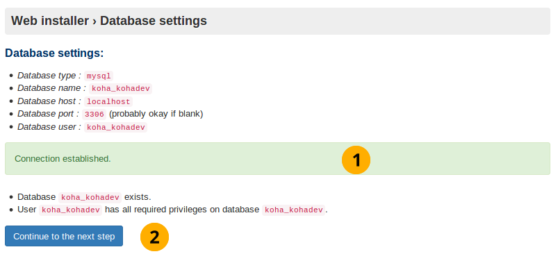
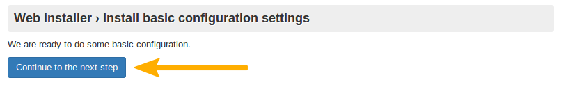
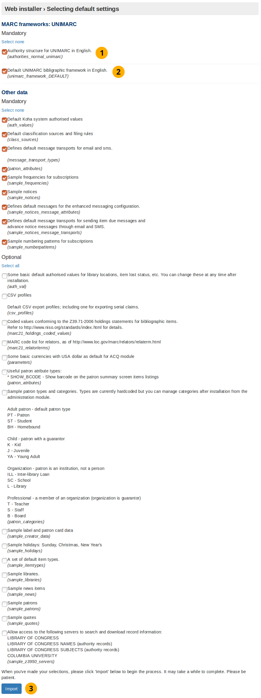
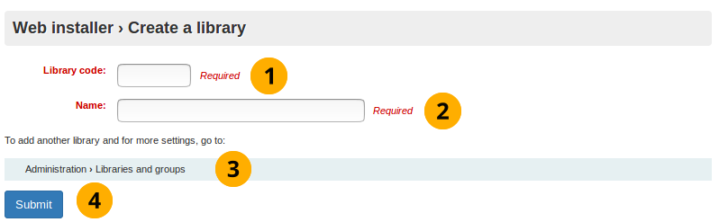

Introduction to the Koha installation process
This is the Koha installation manual.
The Koha installation process uses 2 tools:
Web installer
Onboarding tool
This documentation will outline both of these tools.
What is the Koha web installer?
The web installer sets up the database tables that store the all the data you work with in Koha, for example the library branches, patrons and items.
The web installer starts with a login screen for you to enter the database administrator account credentials.
The installer will then create the tables and fill the tables with data. The next step in the process is to set up a few mandatory first use settings, via the onboarding tool.
What is the Koha onboarding tool?
The onboarding tool makes sure you have at least one library, patron category, patron, item type and circulation rule before you start using Koha.
If you installed sample data for library, patron category, and/or item type then the screens to create these will be skipped.
You will, however, always have to create a patron (to log into the staff interface at the end of the onboarding tool) and a circulation rule.
Web installer
Web installer login
Web installer login
This login screen is the first screen that appears when installing Koha.
Web installer login

Koha version name: This will display whatever Koha version number you are installing.
Username: This is database administrator username which is koha_kohadev by default.
Password: This is the database administrator password which is password by default.
Log in: Select this button to login
Language picker
Installer start screen
This is the first screen of the web installer.
Web installer start screen
Language picker dropdown box: This is specifying the language you want Koha to be in.
注解
Installing other languages that have translations for the installer (DE or FR, for example) will allow those languages to be used for the web installer.
Click the Continue to the next step button to load the next stage of the web installer.
Installer perl modules installed
This screen tells you that the installer has all the dependencies it needs, to create the database in the next screen.
Perl modules installed

Click on the Continue to the next step button to load the next stage of the web installer.
Database settings
This screen informs you of the database settings and asks you to confirm them by clicking the Continue to the next step button.
注解
For the majority of users these settings should be correct, if not then you should contact your support provider.

Database settings
Database settings: Check these database settings are correct.
Click the Continue to the next step button to confirm the database settings
Connection established
After you click the Next button the database connection is confirmed:

Database connection established
Connection established message: This informs you that the database has been successfully created.
Click the Continue to the next step button to load the next stage
注解
If you have database connection difficulties here, the installer will not proceed. Double check the connection information in your koha-conf.xml file, and verify that the permissions and credentials on the database itself are correct.
Ready to fill tables with data
This screen is informing you everything is set up for you to create the database tables in the next screen.
Database ready for data

Click the Continue to the next step button to load the next stage
注解
This step can take some time. Please be patient.
Database tables created
Database tables created

Click the Continue to the next step button
Ready for basic configurations
This screen leads onto installing basic configurations necessary to use Koha.

Ready for basic configurations
Click the Continue to the next step button
Select MARC flavour
You must choose your MARC flavour (format you want the bibliographic (catalog) records to be stored in the database) on this screen:
Select MARC flavour

Unimarc: This is frequently used in European countries (except for the UK) such as Italy.
MARC21: Selected by default, as it is more commonly used globally than UNIMARC.
Click the Continue to the next step button to confirm your choices
MARC21 and UNIMARC setup
注解
In the previous screen you either choose MARC21 or UNIMARC as your MARC flavour. This page outlines both.
MARC21 setup

MARC21 setup
Default MARC21 standard authority types: An authority type is a template of an authority record (stores the search fields used to search an institutions catalog for an item). This option will install sample authority types.
Default MARC21 bibliographic framework: Following on from the MARC21 selection in the previous screen selecting this checkbox (and the Import button) will actually setup the MARC21 bibliographic framework as the desired MARC flavour.
Selected matching rules for MARC21 bibliographic records: The MARC21 matching rules are used to find all the information about specific bibliographic records using the authority type search values.
‘FA’, a ‘fast add’ minimal MARC21 framework suitable for ILL, or on the fly cataloging: The FA MARC framework displays fewer fields, and allows for faster cataloguing on the fly. Select this checkbox to install this minimal framework.
Sample MARC21 bibliographic frameworks for some common types of bibliographic material: This installs the template you will use to create items.
Default Koha system authorised values: This installs mandatory authorised values that every Koha installation needs.
Default classification sources and filling rules: This will insert several common library classification sources such as dewey decimal.
Defines default message transports for email and SMS: This provides the option to the user of being able to change how the library contacts them. They can choose from the following: email address, printed message, SMS, or phone call. Notices will not work without these.
Patron attributes: This does not install any data, and it needs to be removed.
Sample frequencies for subscriptions: For items that arrive on a regular and predictable basis (e.g. monthly magazines), installing sample frequencies is useful because you can simply select a pre-installed sample frequency when you create the item.
Sample notices: This inserts sample notices into the database, meaning all you have to do is customize these sample notices before you use them. Creating these by hand can be very time consuming and error prone.
Defines default messages for the enhanced messaging configuration: The enhanced messaging configuration lets the user choose what messages they receive from the institution. Selecting this will insert sample message types for the due, predue, and advance notice message types.
Defines default message transports for sending item due messages and advance notice messages through email and SMS: This inserts the SMS and email transport types. Mandatory if you want to send notices by email or SMS.
Sample numbering patterns for subscriptions: This option will install sample numbering patterns, saving you having to manually insert them for magazines and other periodicals.
Some basic default authorised values for library locations, item lost status, etc. You can change these at any time after installation: This installs authorised values, which filter user inputs, to make sure they match specified criteria before the library or other object is created.
CSV profiles: Using Koha you can export items. The CSV profile defines how you want to export the item(s). CSV/tab exports will not work without these.
Coded values conforming to the Z39.71-2006 holdings statements for bibliographic items: Not required to use Koha. A holding statement tells the user if the library has a specific item and where it is located. Selecting will install sample code values for items in the holding statements.
MARC code list for relators: Not required to use Koha. A relator is a person who was involved in the development of the item (e.g. author). Selecting this will insert sample relator records into the database.
Some basic currencies with USA dollar as default for ACQ module: Install US dollar, Great British Pound, Canadian Dollar and Euro currencies. Set the US dollar as the default acquisition currency. Not installing these will mean that a currency will need to be defined before acquisitions can be used.
Useful patron attribute types: Not required to use Koha. Patrons have a barcode which identifies them. By clicking this checkbox you are making sure that this patron barcode is displayed on the patron summary screen.
Sample patron types and categories: Not required to use Koha. Selecting this will install sample patron categories into the database. This will mean the create patron category step in the onboarding tool is skipped.
Sample label and patron card data: Not required to use Koha, but recommended for most new installs. Selecting this will install sample data for labels and patron cards and will make it easier to create a labels and patron cards in the future.
Sample holidays: Sunday, Christmas, New Year’s Not required to use Koha. Selecting this will insert sample repeatable public holidays (e.g. Christmas) into the database.
A set of default item types: Not required for Koha. Selecting this will insert sample item type data into the database, meaning the create item type step in the onboarding tool will be skipped.
Sample libraries: Not required for Koha. Selecting this will insert sample libraries into the database. Developers will often want this for demo or development purposes. Selecting this means the create library step in the onboarding tool will be skipped.
Sample news items: Not required for Koha. Selecting this will insert sample news items that are displayed on the OPAC (Online Public Access Catalog) and staff client into the database.
Sample patrons: Not required for Koha. Patrons are the people who use the Koha Library Management System, for example: library users and staff. Selecting this will insert a number of sample patrons into the database. Developers will often want this for demo or development purposes.
Sample quotes: Not required for Koha. Quotes of the day can be displayed to library users on the OPAC (Online Public Access Catalog) interface. Selecting this will install a few library related sample quotes.
Allow access to the following servers to search and download record information: Not required to use Koha, but recommended for most new installs. Selecting this configures Koha to allow access to a selection of Z39.50 targets, which allow searching the target servers for MARC21 records to import them into your Koha instance. This can avoid the need to manually input all record information manually, or greatly speed up the process.
Click the Import button to install the default and selected data values.
UNIMARC setup
There are only two data values in the UNIMARC advanced setup which are unique:
Authority structure for UNIMARC in English
Default UNIMARC bibliographic framework in English
注解
Optional values are the same for both UNIMARC and MARC21, therefore their definition will not be repeated.

UNIMARC setup
Authority structure for UNIMARC in English: Authority records store the search terms used to find items in the database. Unlike MARC21, when using UNIMARC the authority structure needs to be compatible with UNIMARC. Selecting this option makes it compatible.
Default UNIMARC bibliographic framework in English: In the previous screen you clicked to use the UNIMARC flavour, now by selecting this option you are confirming you want to use that framework.
Click the Import button to install the sample data
Selected data added
After you have clicked the Import button in either the MARC21 or UNIMARC setup screen this screen will appear. It shows you if the selected/default data values were successfully inserted into the database.
Selected data added
Optional data added: If you selected an optional data value then it will be displayed here. If you did not choose any optional data value then the optional data added title will not be displayed.
MySQL data added: These data values will always be installed and consequently displayed on this screen.
Mandatory data added: Same as above.
Installation message: Tells you if the Koha database was successfully created ready for you to use the onboarding tool.
Click the Set up some of Koha’s basic requirements button to go to a redirection screen, which in turn will take you to the onboarding tool.
Redirect to onboarding tool
If you wait for around 10 seconds this screen should redirect you to the onboarding tool start screen.
Redirect to onboarding tool

注解
If after waiting you are not redirected select the link pointed out by the arrow in the above screenshot.
Onboarding tool
Create a library
The installer will prompt to create the first library or branch if the sample libraries were not installed.
A library in Koha is the digital representation of a “physical” place. More libraries can be added later by going to Administration -> Libraries and groups.

Create library
Library code: code consisting of up to 10 letters.
Name: Official name of the library, as it is commonly known.
Create more libraries: If more libraries are required, or changes need to be made to this freshly created library, go to Administration -> Libraries and groups
Click the Submit button to create a library.
For example:
Create library example

Library code: The regular expression that filters the acceptable inputs for library code only accepts up to 10 letters.
Create a patron category
All patrons in Koha must have a patron category. The patron category is like a jelly mold; multiple individual patron accounts can share common characteristics, such as circulation rules, notice frequency, holds allowed, and much more. Koha requires at least one patron category in order to add patrons.
A patron category requires:
Category code
Description
Overdue notice required
Category type
Default privacy
Enrolment period: In months OR Until date
Create a patron category

Library creation message: Indicates whether the library was created successfully.
Category code: Code consisting of up to 10 letters.
Description: Sentence describing what the patron category is.
Overdue notice required dropdown button: Set by default to ‘no’. This specifies if you want the patron category to receive overdue notices.
Category type: This makes the category created a staff member.
Default privacy: Set by default to ‘default’. The Default privacy controls the amount of time that the reading history of the patron is stored for.
Enrolment period - in months: This is the number of months that the patrons created from this patron category are enrolled for.
Enrolment period - until date: Select a date from the interactive datepicker calendar icon which appears when you click on this input box. The date you choose will be the enrolment end date for patrons created from this patron category.
Path to create patron category: More patron categories can be created or altered by going to Administration -> Patron categories.
Click the Submit button to create the patron category.
For example:
Create a patron
A superlibrarian patron user is required to log into the Koha staff interface, once the onboarding process has been completed.
注解
It is very important to document the username and password created here as they are the account credentials required to login as an administrator (superlibrarian) of Koha.
You will need to input/select:
Surname
First name
Card number
Library
Patron category
Username
Password

Create a patron
Patron category creation message: This indicates that if the patron category was created successfully.
Surname: Surname, or something descriptive
First name: First name, or something descriptive
Card number: This number must be unique
Library dropdown box: If a library has been created using this onboarding tool, it will be the only option. Otherwise select a random library from the sample libraries installed by the web installer.
Patron category dropdown box: If a patron category was created using this onboarding tool, it will be the only option. Otherwise select the Staff patron category.
Superlibrarian permission: This non-editable setting allows access to all librarian and web based Koha administration tasks in the staff interface. This user is the most powerful user in any Koha, so protect the credentials well.
Username: The username to log into the staff interface and OPAC (Online Patron Access Catalogue) with.
Password: A password consisting of letters, numbers, and spaces only which is greater than 8 characters.
Confirm password: Repeat the above password again
Click the Submit button to create the patron account
Path to create patron: Patron’s can be created or altered by going to Patrons -> New patron
Assign patron permissions: After creating a patron go More -> Set permissions to assign permissions.
For example:
Create a patron example

Create an item type
If you did not install sample item types in the web installer then this screen will be displayed.
As with the patron category the item type is basically a template which you use to make multiple items with common characteristics.
You need to input:
Item type code
Description

Create item type
Administrator account creation message: Indicates if the administrator patron was created successfully
Item type code: Code consisting of up to 10 letters
Description: Sentence describing what the item type is.
Path to create item type: Item types can be created or altered by going to Administrator->Item types
Click the Submit button to create the item type
For example:
Create item type example

注解
The regular expression filtering item type code input will only accept letters.
Create a circulation rule
This screen will always be displayed no matter what sample data you installed with the web installer.
Here you are creating a rule which applies the pre-defined organisational decisions of your library as to what restrictions you place on patrons borrowing items.
Create circulation rule

注解
Numbers are the only valid input for all input fields in this form.
Item type creation message: Indicates if the item type was created successfully
Library branch dropdown box: This is the library (or libraries) you want to apply the circulation rule to. By default it is set to all, however you can select a singular library to apply the rule to from the dropdown box.
Patron categories dropdown box: This is the patron categories you want to apply the circulation rule to. As with library branch it is set to all by default but more options are avaliable.
Item type dropdown box: This is the item types that you want the circulation rule to apply to. Again more options are avaliable than the default selected all option.
Current checkouts allowed: This is the number of items allowed from the selected library, for selected patron categories and of the selected item type. Set to 50 by default.
Loan period: Number of days or hours that an item is allowed out for. Set to 14 by default.
Units dropdown box: Set by default to aays, the unit selecting in this field is applied to the numerical values written into loan period and renewals period
Renewals allowed: Number of times a item can be renewed. Set to 10 by default.
Renewals period: Number of days or hours that a renewal lasts for. Set to 14 by default.
On shelf holds allowed dropdown box: If items can be held whilst they are on the shelf.
Path to create circulation rule: Circulation rules can be created or altered by going to Administration -> Circulation and fines rules
Click the submit button to create the circulation rule.
Onboarding tool complete
This page tells you if the circulation rule was created successfully, and that the Koha installation is complete

Web installer message: Indicates if the web installation is complete
Circulation rule creation message: Indicates if the circulation rule was created successfully.
Start using Koha: Click to login to Koha using the Koha administrator account you created using the onboarding tool.
Login to access staff interface
You have now finished using the onboarding tool and can log into the staff interface using the patron account credentials you created in the onboarding tool
Login screen

Username: Enter the username you created for the patron
Password: Enter the password you created
Library: This is the library staff interface you want to log into. The options are either: my library or the library you installed/created. Leaving the default selected option of my library is fine to log in with first time.
Click the login button to access the staff interface
For example:
Login example

Staff interface
The staff interface should now appear
Staff interface

参见
For more information about how to use the staff interface, please visit https://koha-community.org/documentation/